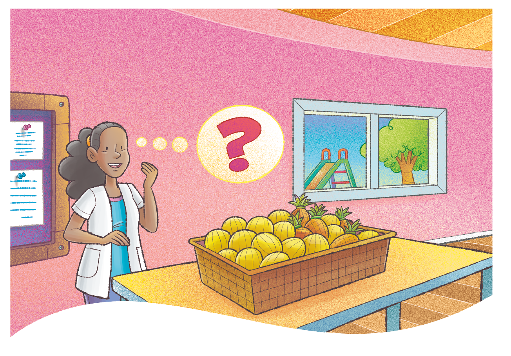
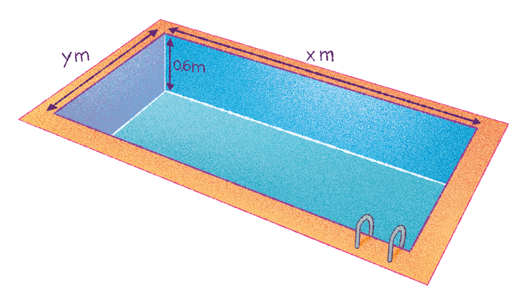
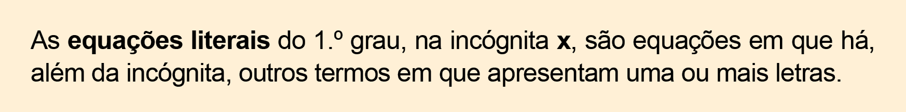
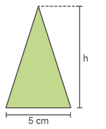
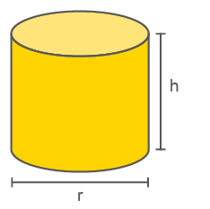
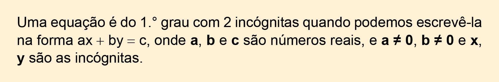

132
CAPÍTULO 3 – Equações
Equações do 1.º grau
Mariana trabalha em uma creche e ganhou uma cesta com abacaxis e melões. O feirante disse a ela que na cesta há um total de 40 frutas, sendo que a quantidade de abacaxis corresponde a da de melões. Mariana ficou pensativa e quer saber a quantidade que há de cada fruta.
A situação apresentada pode ser resolvida por meio de uma equação do 1.º grau. Troque ideias com um colega e escrevam, no caderno, uma equação do 1.º grau que permita resolver essa situação.
Calculem a quantidade de melões e abacaxis que há nessa cesta.
Em uma equação do 1.º grau, a letra que representa o valor desconhecido denomina-se incógnita da equação. Como estudamos anteriormente, em uma equação do 1.º grau temos:
O valor de x que torna a igualdade verdadeira é chamado de raiz da equação.
133
Encontre soluções
Um terreno retangular tem 56 m de perímetro. Sabendo que a medida do comprimento supera a medida da largura em 4 m, determine as medidas deste terreno.
A soma de três números é igual a 88. O segundo supera o primeiro em 6 unidades e o terceiro supera o segundo em 10 unidades. Quais são esses números?
Em uma empresa, 3 sócios resolveram dividir a metade dos lucros obtidos no ano entre eles. O primeiro recebeu do valor dividido, o segundo , e o terceiro recebeu R$ 4.800,00. Qual foi o lucro desta empresa?
Lucas e Márcio compraram uma guitarra por R$ 747,00. Lucas contribuiu com do valor pago por Márcio. Qual foi o valor dado por Lucas para comprar a guitarra?
Resolva as equações a seguir em seu caderno sendo U = .
No sorteio realizado por uma loja de eletrodomésticos, foram distribuídos R$ 49.000,00 em prêmios. O terceiro sorteado recebeu a metade do segundo, e o primeiro, o quádruplo do terceiro. Qual quantia coube a cada um dos sorteados?
O livro Palatine ou Antologia grega é uma referência no estudo de problemas algébricos antigos. Trata-se de uma coleção de quarenta e seis problemas numéricos que foram reunidos por volta de 500 d.C. por Metrôdoro. A seguir, são apresentados dois desses problemas. Com um colega, tentem resolvê-los.
Uma quantidade de maçãs foi repartida entre 6 pessoas. Quatro delas receberam, respectivamente, da quantidade total, enquanto a quinta recebeu 10 maçãs, restando 1 para a sexta pessoa. Qual foi o total de maçãs repartidas?
Democares viveu um quarto de sua vida como criança, um quinto como jovem, um terço como adulto e há 13 anos é ancião. Quantos anos ele tem?
S.I./Prefeitura Belo Horizonte
134
Equações fracionárias com uma incógnita
Costureiro em seu ateliê. Belo Horizonte, MG, 2019.
Bruno gastou R$ 72,00 comprando tecido para o seu ateliê de costura. Passado algum tempo, o preço do metro do tecido subiu R$ 2,00. Com esse novo preço, ele gastou R$ 56,00 na compra de mais tecido. Sabendo que o total de tecido comprado por Bruno foi de 64 metros, quantos metros ele adquiriu em cada compra?
Vamos representar por x o valor inicial pago pelo metro de tecido.
x → preço inicial do metro do tecido
Dividindo o valor total pago pelo preço inicial do metro do tecido (x) teremos a quantidade de tecido comprado.
Total de tecido, em metros, na primeira compra:
Total de tecido, em metros, na segunda compra, em que o preço do metro aumentou R$ 2,00:
Foram comprados, no total, 64 metros de tecido. Então:
equação fracionária
Vamos, agora, resolver esta equação.
72x + 144 + 56x = 64x² + 128x
128x + 144 = 64x² + 128x
144 = 64x² + 128x - 128x
64x² = 144
x² =
135
Temos duas soluções possíveis para esta equação, sendo uma com valor positivo e a outra com valor negativo. Como x representa o preço inicial, somente o valor positivo serve como solução, logo:
Portanto, o preço inicial do tecido era R$ 1,50.
Então:
1.ª compra: = 48 m
2.ª compra:= = 16 m
Logo, Bruno comprou 48 metros na primeira compra e 16 metros na segunda.
Veja outras situações envolvendo equações fracionárias:
Situação 1
Calcule o valor de x na equação , sendo x ≠ 0.
66 = 2x + 9x
66 = 11x
x =
x = 6
S = {6}
Situação 2
Calcule o valor de x na equação , com x ≠ -3 e x ≠ 3.
3x - 9 - 3x - 9 = x
x = -18
S = {-18}
136
Encontre soluções
Em seu caderno, resolva as seguintes equações fracionárias:
, com x ≠ 6;
, com x ≠ 0;
, com x ≠ 0;
, com a ≠ 0;
, com x ≠ 0;
, com a ≠ 0.
No caderno, determine a solução de cada uma das equações.
, com a ≠ 2 e a ≠ -2;
,com y ≠ 2 e y ≠ 4;
, com a ≠ 2 e a ≠ -2;
, com x ≠ 4 e x ≠ - 4;
, com a ≠ -1 e a ≠ 0;
, com b ≠ -1 e b ≠ 1;
, com a ≠ -1 e a ≠ 1.
Uma instituição de caridade distribui, todo mês, 1 000 kg de alimentos a uma comunidade carente formada por x famílias. Neste mês, a instituição distribuiu 1 100 kg para essa comunidade, que atualmente está com 4 famílias a mais. Quantas famílias há na comunidade, sabendo que todas receberam a mesma quantidade de alimentos que nos meses anteriores?
Um trem que liga as cidades A e B, distantes 500 km uma da outra, demora x horas para percorrer o trajeto. Um novo trecho foi adicionado para ligar essas cidades a uma terceira cidade, deixando o percurso total com 750 km e aumentando em 4 horas o tempo de viagem. Sabendo que a velocidade do trem é a mesma em ambos os percursos, qual o total de horas de viagem?
No sábado, o total de R$ 360,00 de gorjeta foi repartido igualmente entre certo número de garçons. No almoço de domingo, o valor total de gorjetas alcançou R$ 312,00, sendo que havia dois garçons a menos. Sabendo que, nos dois dias, cada garçom recebeu a mesma quantia de gorjeta, calcule quantos garçons trabalharam no sábado e quantos trabalharam no domingo e a quantia que coube a cada um.
Em uma loja, 216 copos foram embalados em x caixas e 168 pratos, em x - 2 caixas. Sabendo que a quantidade de copos e pratos colocados em cada caixa é a mesma, quantas caixas foram usadas para embalar os copos e os pratos?
137
Qual deve ser o valor de a para que a igualdade , com a ≠ -1 e a ≠ 1, seja verdadeira?
(Unicamp-SP) Em um restaurante, todas as pessoas de um grupo pediram um mesmo prato principal e uma sobremesa. Com o prato principal, o grupo gastou R$ 56,00 e com a sobremesa, R$ 35,00; cada sobremesa custou R$ 3,00 a menos que o prato principal.
Encontre o número de pessoas neste grupo.
Qual o preço do prato principal?
Equações literais
Uma escola resolveu construir uma piscina para os alunos da Educação Infantil. Uma empresa que constrói e comercializa piscinas apresentou um modelo que tem 60 centímetros de profundidade, destinado a crianças com idade a partir de 5 anos.
O volume de água da piscina dependerá do comprimento (x) e da largura (y) do modelo escolhido pela escola. Para calcular o volume da piscina, temos:
V = 0,6xy
Observe que, além da incógnita V, temos outro termo com mais duas letras.

138
Vejamos como resolver uma equação literal. Observe as situações a seguir:
Situação 1
Sendo x a incógnita, determine o conjunto solução da equação x + ab = 5ab - x.
x + ab = 5ab - x
x + x = 5ab - ab
2x = 4ab
x =
x = 2ab
Portanto, S = {2ab}.
Situação 2
Resolva a equação literal 6(x - a) = 4(x + b), sendo x a incógnita.
6(x - a) = 4(x + b)
6x - 6a = 4x + 4b
6x - 4x = 4b + 6a
2x = 2(2b + 3a)
x =
x = 2b + 3a
Portanto, S = {2b + 3a}.
Reinaldo Rosa/Acervo da Editora
Encontre soluções
Observe o triângulo representado abaixo.

A área deste triângulo pode ser calculada pela fórmula , em que h representa a medida da altura do triângulo e b a medida da base. Desta forma, de acordo com as medidas indicadas no triângulo, escreva uma equação que permita calcular as seguintes medidas:
a área A desse triângulo, a partir da medida h da altura e da base que mede 5 cm.
a altura h desse triângulo, a partir da área A e da base que mede 5 cm.
139
Uma locadora de automóveis cobra uma taxa fixa de R$ 50,00 pela locação de um carro popular e, mais R$ 35,00 pela diária do aluguel. Escreva uma equação que corresponda ao valor total do aluguel y, a partir da taxa fixa de locação, mais o valor da diária x do aluguel.
Observe o cilindro representado abaixo.

A fórmula V = πr² · h determina o volume desse cilindro, em que:
r → medida do raio da base do cilindro;
h → medida da altura do cilindro.
Escreva uma equação que permita calcular a medida h da altura, a partir do volume V e da medida r do raio desse cilindro.
Sendo x a incógnita, resolva as seguintes equações literais:
2x + 3m = x
12x + 5y = 10x - 8y
x(b + 7) = 2(x - 3)
a(4x + 8) - b(x + 2) = 16a - 4b
Equações do 1.o grau com 2 incógnitas
Kauê estava organizando a produção de sua fábrica e percebeu que ele e sua sócia, Tauane, produzem 8 cestos de vime por semana.
Observe o quadro abaixo com as possíveis quantidades de cestos produzidos:
|
Cestos produzidos por Kauê |
Cestos produzidos por Tauane |
Total de cestos produzidos |
|
0 |
7 |
7 |
|
1 |
6 |
7 |
|
2 |
5 |
7 |
|
3 |
4 |
7 |
|
4 |
3 |
7 |
|
5 |
2 |
7 |
|
6 |
1 |
7 |
|
7 |
0 |
7 |
Se representarmos por x o número de cestos produzidos por Kauê e, por y o número de cestos feitos por Tauane, podemos representar a situação pela equação: x + y = 7. Esta sentença matemática é um exemplo de equação do 1.° grau com duas incógnitas. De forma geral, dizemos que:

140
Para determinar uma possível solução dessa equação, atribuímos um valor qualquer a uma das incógnitas e determinamos o valor da outra incógnita. Por exemplo, assumindo que x = 2 na equação x + y = 7, podemos calcular o valor de y.
2 + y = 7 ⇒ y = 7 - 2 ⇒ y = 5
Logo, x = 2 e y = 5 é uma solução da equação.
Também podemos dizer que o par ordenado (2,5) é uma solução da equação.
Na maior parte dos casos, podemos escolher infinitos valores racionais para uma das incógnitas dessa equação. Assim, a equação pode ter infinitos pares ordenados como solução. Em nosso exemplo, as incógnitas poderiam assumir valores entre 0 e 7.
Solução gráfica de uma equação do 1.° grau com 2 incógnitas
Vamos determinar algumas soluções da equação x + y = 7, sendo x e y números naturais.
Na situação apresentada, no quadro anterior, em cada linha a solução indicada pode ser representada por um par ordenado (x, y):
(0, 7); (1, 6); (2, 5); (3, 4); (4, 3); (5, 2); (6, 1) e (7, 0).
Estas são as possíveis soluções para essa equação e podemos representar graficamente esses pares ordenados em um sistema de eixos cartesianos.
141
Observe que os pontos correspondentes a esses pares ordenados pertencem a uma mesma reta, ou seja:

Observe que os pontos não “completam” toda a reta, pois estamos trabalhando apenas com números inteiros positivos, pois, no caso dos cestos não podemos ter números negativos.
Se conhecemos dois pares ordenados que são soluções de uma equação do 1.° grau com duas incógnitas, conseguimos traçar a reta que representa todas as soluções dessa equação.
Encontre soluções
Em seu caderno, copie os pares ordenados que são soluções da equação x + y = 36.
(12, 24)
(16, 21)
(20, 16)
(15, 21)
(18, 18)
Considere a equação 2x - y = 2, e responda no caderno os itens a seguir.
Determine 3 pares de soluções possíveis.
(-1, - 4) é a solução dessa equação?
(1, 4) é a solução dessa equação?
(1, 0) e (0, 1) representam a mesma solução? Justifique sua resposta.
Elabore, no caderno, um quadro com possíveis soluções da equação 2x + y = 50 para cinco pares de números inteiros.